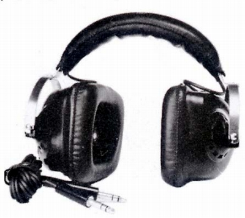

SH-95

■価格 10,000円■型式 ダイナミック型4チャンネル■振動板■インピーダンス 8Ω（+40％ -10％）■再生周波数帯域 50-17,000Hz■許容入力 300mW■感度 ■コード 2m■重量 800g■発売 1974年■販売終了1978年頃■備考 4ch/2ch切替スイッチ付き
海外サイトでこの機種に似たモデルでエレガのDR-147Qという機種を見かけた。
ダイヤトーンのインデックスへ